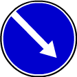

4. Предписывающие знаки

4.1.2
Движение направо
4.1.4
Движение прямо или направо
4.1.5
Движение прямо или налево
4.1.6
Движение направо или налево
Разрешается движение только в направлениях, указанных на знаках стрелками. Знаки, разрешающие поворот налево, разрешают и разворот (могут быть применены знаки 4.1.1 - 4.1.6 с конфигурацией стрелок, соответствующей требуемым направлениям движения на конкретном пересечении).
Действие знаков 4.1.1 – 4.1.6 не распространяется на маршрутные транспортные средства.
Действие знаков 4.1.1 – 4.1.6 распространяется на пересечение проезжих частей, перед которым установлен знак.
Действие знака 4.1.1, установленного в начале участка дороги, распространяется до ближайшего перекрестка. Знак не запрещает поворот направо во дворы и на другие прилегающие к дороге территории.

4.2.1
Объезд препятствия справа

4.2.2
Объезд препятствия слева
Объезд разрешается только со стороны, указанной стрелкой.
Объезд препятствия справа или слева
Объезд разрешается с любой стороны.

4.3
Круговое движение
Разрешается движение в указанном стрелками направлении.

4.4.1
Велосипедная дорожка или полоса для велосипедистов

4.4.2
Конец велосипедной дорожки или полосы для велосипедистов
Введён в редакции Постановления Правительства РФ от 22.03.2014 N 221
Пешеходная дорожка
Разрешается движение пешеходам и велосипедистам в случаях, указанных в пунктах 24.2, 24.3 и 24.4 настоящих Правил.

4.5.2
Пешеходная и велосипедная дорожка с совмещенным движением (велопешеходная дорожка с совмещенным движением)
Введён в редакции Постановления Правительства РФ от 22.03.2014 N 221

4.5.3
Конец пешеходной и велосипедной дорожки с совмещенным движением (конец велопешеходной дорожки с совмещенным движением)
Введён в редакции Постановления Правительства РФ от 22.03.2014 N 221

4.5.4

4.5.5
Пешеходная и велосипедная дорожка с разделением движения
Велопешеходная дорожка с разделением на велосипедную и пешеходную стороны дорожки, выделенные конструктивно и (или) обозначенные горизонтальной разметкой 1.2.1, 1.2.2, 1.23.2 и 1.23.3 или иным способом (введены в редакции Постановления Правительства РФ от 22.03.2014 N 221).
4.5.6

4.5.7
Конец пешеходной и велосипедной дорожки с разделением движения (конец велопешеходной дорожки с разделением движения)
Добавлено в редакции Постановления Правительства РФ от 22.03.2014 N 221

4.6
Ограничение минимальной скорости
Разрешается движение только с указанной или большей скоростью (км/ч).
Конец зоны ограничения минимальной скорости

4.8.3
Направление движения транспортных средств с опасными грузами
Движение транспортных средств, оборудованных опознавательными знаками (информационными таблицами) "Опасный груз", разрешается только в направлении, указанном на знаке: 4.8.1 - прямо, 4.8.2 - направо, 4.8.3 - налево.
24.2. Допускается движение велосипедистов в возрасте старше 14 лет:
-
по правому краю проезжей части - в следующих случаях:
- отсутствуют велосипедная и велопешеходная дорожки, полоса для велосипедистов либо отсутствует возможность двигаться по ним;
- габаритная ширина велосипеда, прицепа к нему либо перевозимого груза превышает 1 м;
- движение велосипедистов осуществляется в колоннах;
- по обочине - в случае, если отсутствуют велосипедная и велопешеходная дорожки, полоса для велосипедистов либо отсутствует возможность двигаться по ним или по правому краю проезжей части;
-
по тротуару или пешеходной дорожке - в следующих случаях:
- отсутствуют велосипедная и велопешеходная дорожки, полоса для велосипедистов либо отсутствует возможность двигаться по ним, а также по правому краю проезжей части или обочине;
- велосипедист сопровождает велосипедиста в возрасте до 7 лет либо перевозит ребенка в возрасте до 7 лет на дополнительном сиденье, в велоколяске или в прицепе, предназначенном для эксплуатации с велосипедом.
24.3. Движение велосипедистов в возрасте от 7 до 14 лет должно осуществляться только по тротуарам, пешеходным, велосипедным и велопешеходным дорожкам, а также в пределах пешеходных зон.
24.4. Движение велосипедистов в возрасте младше 7 лет должно осуществляться только по тротуарам, пешеходным и велопешеходным дорожкам (на стороне для движения пешеходов), а также в пределах пешеходных зон.

1.2.1

1.2.2

1.23.2

1.23.3